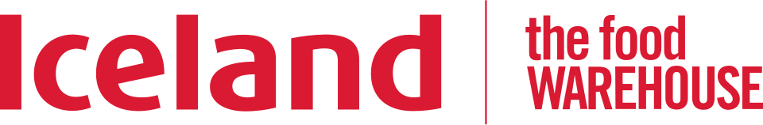

홈 > 브랜드 매거진 > Iceland
Iceland
아이슬란드(Iceland)는 냉동식품을 전문으로 하는 영국의 슈퍼마켓 체인이다.
산업 분야 리테일·커머스 · 공개 등급 자료 기반 · 브랜드 평가 4.1 ★

한눈에 보는 브랜드
아이슬랜드(Iceland Foods)는 1970년 영국 슈루즈베리 인근 오스웨스트리의 작은 매장에서 낱개 냉동식품 판매로 출발한 영국 냉동식품 전문 슈퍼마켓 체인이다. 창업자 맬컴 워커가 단돈 30파운드로 시작해 80년대 경쟁사 베잠 인수로 전국망을 갖췄고, 2020년 워커 가문이 남아공 브레이트 지분을 사들여 완전한 가족 지배 체제로 복귀했다.
현재 본사는 웨일스 디사이드, 연매출 약 41억 파운드, 영국 내 약 969개 매장을 운영한다.
브랜드 관점
아이슬랜드의 핵심 차별점은 대형 종합마트가 곁다리로 두는 냉동 카테고리를 전면에 세운 전문화 전략이다. 냉동피자·생선튀김·감자류 등 가정 상비 품목에서 테스코·아스다보다 낮은 가격을 제시하며, 자체 브랜드(PB) 비중이 매출의 상당 부분을 차지한다.
2018년 자체 브랜드 플라스틱 제로·팜유 제거를 선언해 친환경 이미지를 선점했으나, 2022년 우크라이나 전쟁발 해바라기유 품귀와 비용 압박으로 일부 약속을 철회한 점은 가치 지향과 원가 현실의 긴장을 보여준다. 알디·리들 같은 할인점이 영국 식료품 시장을 잠식하는 국면에서 아이슬랜드는 1파운드 가격 동결·프로모션으로 가격 민감 가구를 방어한다.
한국 독자에게는 냉동 가정간편식(HMR) 수요가 커지는 국내 시장에서 카테고리 특화와 PB 집중이 어떻게 생존 무기가 되는지 참고할 만한 사례다.
시작과 성장
아이슬랜드는 냉동고가 막 가정에 보급되던 1970년대 초, 종합마트가 냉동식품을 부수적 코너로만 취급하던 시대 배경에서 탄생했다. 1970년 맬컴 워커와 피터 힌치클리프가 단돈 30파운드 자본과 오스웨스트리 매장 한 곳으로 낱개 냉동식품 판매를 시작했고, 워커는 본업이던 울워스에서 부업이 발각돼 해고당한 일을 오히려 사업 전념의 계기로 삼았다.
첫 번째 전환점은 1980년대 공격적 소규모 경쟁사 인수와 1989년 대형 라이벌 베잠 인수로, 이를 통해 전국 체인으로 도약하며 2000년경 매출 20억 파운드·매장 700여 곳·직원 2만2천여 명 규모에 이르렀다. 두 번째 전환점은 2005년 경영난에 빠진 빅 푸드 그룹을 컨소시엄과 함께 인수해 워커가 최고경영자로 복귀하며 비상장 전환한 사건이다.
이후 2014년 대용량·할인 포맷인 더 푸드 웨어하우스를 출범해 패밀리·소상공인 수요로 확장 축을 넓혔다.
브랜드 아이덴티티
아이슬랜드의 브랜드 가치는 합리적 가격과 냉동식품 접근성의 민주화에 있다. 비주얼 아이덴티티는 붉은색 워드마크 한 줄로 압축되며, 현대적 산세리프 서체로 또렷한 가독성과 친근함을 동시에 전한다.
타깃은 예산을 빠듯하게 운용하는 가족 단위 소비자로, 과거 '그래서 엄마들은 아이슬랜드에 간다' 같은 슬로건과 가격을 앞세운 카피가 보이스의 성격을 잘 드러낸다. 브랜드 톤은 격식보다 솔직함과 실속을 앞세우며, 한때 플라스틱 제로·팜유 제거 같은 친환경 메시지로 가치 지향 이미지를 덧입혔다.
2001년 잠시 온라인 지향 명칭으로 개편했다가 2005년 원래 명칭으로 회귀한 이력은 정통성을 지키려는 태도를 보여준다.
제품과 서비스
취급 카테고리는 냉동피자·생선·감자류·채소·디저트 등 냉동식품을 축으로, 냉장·상온 식료품과 가정용품까지 아우른다. 자체 브랜드(PB)가 매출의 큰 축이며, 2019년 550여 종을 출시한 대규모 PB 개편으로 경쟁력을 강화했다.
슬리밍월드·그렉스·TGI 프라이데이스·캐시드럴 시티·마이프로틴 등 독점 공급 협업 브랜드도 운영한다. 채널은 핵심 아이슬랜드 매장과 대용량 할인 포맷 더 푸드 웨어하우스, 온라인 배송으로 구성된다.
현재 상태
본사는 영국 웨일스 디사이드에 있으며, 법인명은 아이슬랜드 푸즈(Iceland Foods Ltd)다. 지배구조는 2020년 남아공 브레이트의 63% 지분을 약 1억1500만 파운드에 인수한 뒤 창업자 워커 가문과 최고경영자 타셈 달리왈 측이 100% 보유하는 비상장 가족 지배 체제다.
국가는 영국이며, 2025년 3월 마감 회계연도 매출은 약 41억 파운드, 영국 내 매장은 약 969곳(아이슬랜드 약 777곳, 더 푸드 웨어하우스 약 192곳)이다. 그 밖의 세부 재무 항목은 미공개.
타임라인
정리된 연도형 이벤트가 없습니다.
BI/CI 변천사
함께 읽을 브랜드
Fl
Flaum
리테일·커머스 · 편집 검수FlaumFlaum는 2025년에 기록된 Shoppy Shop Brands 계열의 브랜드 아이덴티티 사례입니다. M/OTG가 아이덴티티 작업의 디자이너로 기록되어 있습니다....
 리테일·커머스 · 자료 기반CAP
리테일·커머스 · 자료 기반CAP카프마르크트(CAP, CAP-Markt)는 1999년 독일에서 시작한 사회적 슈퍼마켓 체인이다. 장애인 고용을 핵심으로 하는 동네형 슈퍼마켓으로, 명칭은 'handi...
Be
Best of the Bone
리테일·커머스 · 편집 검수Best of the BoneBest of the Bone는 2025년에 기록된 Shoppy Shop Brands 계열의 브랜드 아이덴티티 사례입니다. Universal Favourite가 아이...
Ch
Chilly Willy
리테일·커머스 · 편집 검수Chilly WillyChilly Willy는 2025년에 기록된 Shoppy Shop Brands 계열의 브랜드 아이덴티티 사례입니다. The Young Jerks가 아이덴티티 작업의...
Ea
Eat Dirt
리테일·커머스 · 편집 검수Eat Dirt잇 더트는 광고업계 출신 조던 울리와 캐서린 바가 선보인 식물 기반 세탁 세제다. 두 사람은 2014년 세운 컨설팅 겸 카피라이팅 스튜디오를 기반으로, 플라스틱 통과...
Gh
Ghia Non-Alcoholic Aperitif
리테일·커머스 · 편집 검수Ghia Non-Alcoholic AperitifGhia Non-Alcoholic Aperitif는 2022년에 기록된 Shoppy Shop Brands 계열의 브랜드 아이덴티티 사례입니다. Perron-Roett...
Ko
Korshags
리테일·커머스 · 편집 검수KorshagsKorshags는 2025년에 기록된 Shoppy Shop Brands 계열의 브랜드 아이덴티티 사례입니다. Pond가 아이덴티티 작업의 디자이너로 기록되어 있습니다...
Ve
Veesey
리테일·커머스 · 편집 검수VeeseyVeesey는 2025년에 기록된 Shoppy Shop Brands 계열의 브랜드 아이덴티티 사례입니다. Onfire Design가 아이덴티티 작업의 디자이너로 기록...